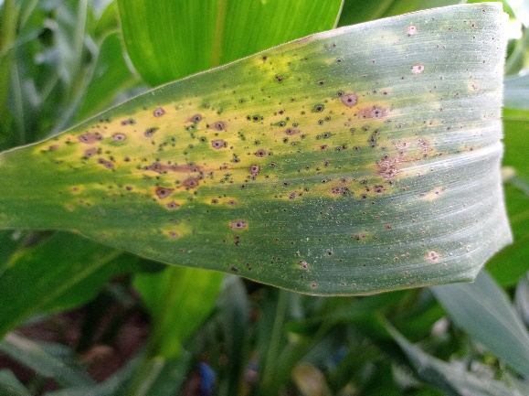
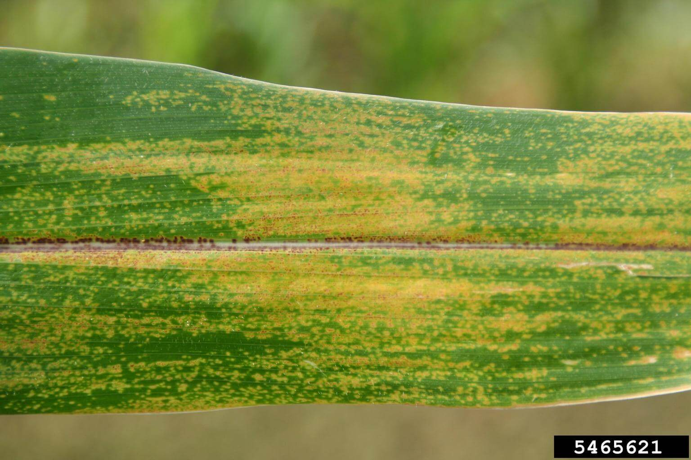

¿Conoces las enfermedades que dañan el cultivo de maiz?
Acá te contamos las enfermedades más comunes dentro de la Provincia de Ubaté
Mancha de Asfalto del maíz
(Phyllachora maydis, Monographella maydis y Coniothyrium phyllachorae)

La mancha de asfalto es una enfermedad fúngica que afecta al maíz, causada por una compleja interacción de tres hongos. Se presenta con mayor frecuencia en climas cálidos y húmedos, especialmente en zonas ribereñas o con drenaje deficiente. Su desarrollo se favorece con temperaturas entre 17 y 22 °C y una humedad relativa superior al 75 %, condiciones que facilitan la germinación y propagación del patógeno.
Aparición de puntos negros ligeramente elevados distribuidos por toda la lámina foliar.
- Rotar cultivos para evitar la acumulación del hongo en los residuos.
- Eliminar restos de cosecha infectados para reducir la fuente de inóculo.
- SEvitar siembras densas y mejorar el drenaje del suelo para disminuir la humedad.
- Utilizar variedades resistentes o tolerantes al complejo de mancha de asfalto.
- Aplicar fungicidas sistémicos preventivos cuando las condiciones ambientales sean favorables al desarrollo del patógeno (alta humedad y lluvias continuas)..
Mancha Parda del maíz
(Physoderma maydis)

La mancha parda del maíz es una enfermedad fúngica causada por Physoderma maydis. Se presenta principalmente en ambientes cálidos y húmedos, con temperaturas entre 23 y 30 °C, y se favorece en suelos con mal drenaje o con tendencia al encharcamiento. Suele aparecer durante la floración o en etapas avanzadas del cultivo
- Comienza con pequeñas manchas amarillas o pardas distribuidas por toda la hoja.
- Los bordes de las hojas muestran manchas agrupadas de color pardo oscuro o púrpura.
- Las lesiones pueden unirse formando parches grandes de tejido seco.
- El tejido afectado desarrolla estructuras reproductivas del hongo (esporangios) de color café, visibles a simple vista.
- En casos severos, las hojas pueden doblarse por el sitio de la lesión y reducir la capacidad fotosintética.
- Rotar cultivos para disminuir la persistencia del hongo en el suelo.
- Eliminar residuos de cosecha infectados para evitar nuevas infecciones.
- Evitar encharcamientos, mejorando el drenaje y la aireación del suelo.
- Utilizar semillas certificadas y variedades resistentes.
- Aplicar fungicidas preventivos cuando se presenten condiciones favorables (alta humedad y calor).